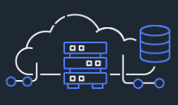

Home
About
Services
Contact us
About
Cloud computing is on-demand access, via the internet, to computing resources—applications, servers (physical servers and virtual servers), data storage, development tools, networking capabilities, and more—hosted at a remote data center managed by a cloud services provider (or CSP). The CSP makes these resources available for a monthly subscription fee or bills them according to usage. Compared to traditional on-premises IT, and depending on the cloud services you select, cloud computing helps do the following:
Lower IT costs: Cloud lets you offload some or most of the costs and effort of purchasing, installing, configuring, and managing your own on-premises infrastructure.
Improve agility and time-to-value: With cloud, your organization can start using enterprise applications in minutes, instead of waiting weeks or months for IT to respond to a request, purchase and configure supporting hardware, and install software. Cloud also lets you empower certain users—specifically developers and data scientists—to help themselves to software and support infrastructure.
Scale more easily and cost-effectively: Cloud provides elasticity—instead of purchasing excess capacity that sits unused during slow periods, you can scale capacity up and down in response to spikes and dips in traffic. You can also take advantage of your cloud provider’s global network to spread your applications closer to users around the world.
Services

Infrastructure as a Service (IaaS)
|
Platform as a Service (PaaS)
|
Software as a Service (SaaS)
|
|---|
Contact us
| |
|